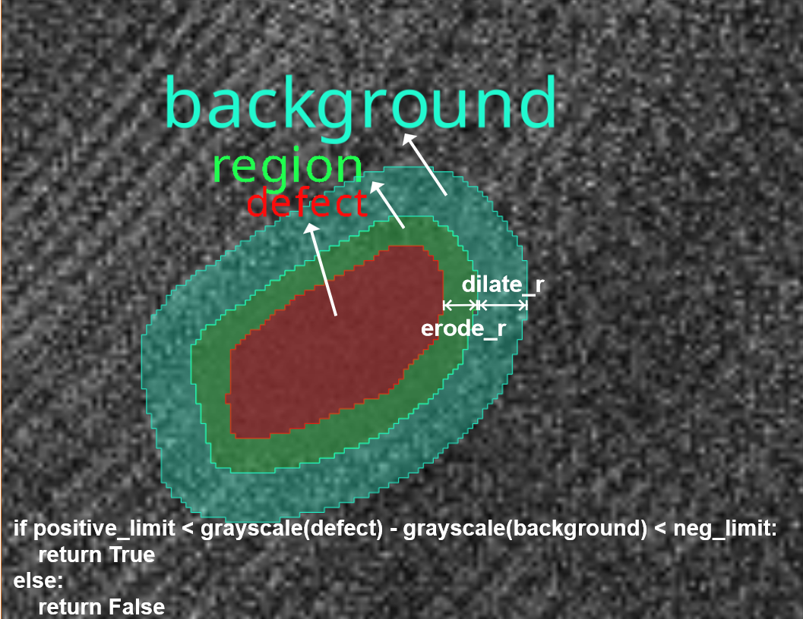
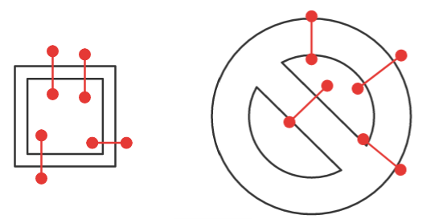

内置函数模板说明#
区域分块函数Split Poly#
细节定义#
功能：将多个Polygon切分为指定大小的切片，多用于视图转换器脚本中为后续算法工具生成大小一致的视图以实现输入尺寸的归一化
- 输入：
polys：目标切分的多边形
tg_width: 目标切块宽度
tg_height: 目标切块高度
image_width=0: 原始图片宽度
image_height=0: 原始图片高度
overlap_width=0: 目标切块之间的横向间隔,默认为0
overlap_height=0: 目标切块之间的纵向间隔,默认为0
discard_out_range=False: 是否舍弃超出部分,如果为False则会使用掩膜填充超出部分区域,默认为False
is_segment_mode=False: 前序模块是否为分割模块,如果为True则会根据最小外接矩形自行计算角度并归一化,最后角度范围在(-90,90]
enable_auto_mask=False: 是否启用自动掩膜,如果为True则会在每个目标切块中绘制对应缺陷形状的掩膜
erode_dilate_value=0: 自动掩膜腐蚀膨胀参数,大于0代表膨胀,小于0代表腐蚀,默认为0
reverse_mask=False: 是否反选自动掩膜,如果启用自动掩膜时这一参数为False,则会将掩膜反选
with_angle=False: 是否根据多边形角度切块，默认为False
iou_thres=0.8: 切块之间去重阈值，当两个切块交叠率大于此阈值时仅保留一个
- 输出：
view_list：视图列表
详细使用场景请参考 视图转换脚本编辑指南 中基础示例章节
相对灰度测量函数Relative Grayscale#
焊道宽度测量函数Bead Width#
测量说明#
采用线段组定义测量位置，用一组线段来表示测量位置，如下所示，红色线段表示测量位置，与闭合图形的交点间的距离作为测量的宽度。对每个区域进行测量，测量的值为该区域所有测量位置的最大值和最小值，如果某个区域没有定义测量位置，则其最大宽度会输出为-1
细节定义#
输入：AI分割结果（
MultiPolygon2f），以及所需测量的位置（MultiSegment2f）输出：所有测量位置处的宽度的最大值及最小值
宽度定义的细节:
宽度定义：线段与多边形交点间的距离（正常情况，如下图绿色）
线段与多边形无交点：忽略此测量位置（如下图红色虚线）
线段与同一多边形有奇数个交点时：忽略此测量位置（如下图红色实线）
线段与多边形有大于2个交点时：返回最外两点的距离作为宽度，或忽略（暂时选择忽略）（此种方法仍存在失败的情况，如下图紫色，此类情况仍存在错误）
计算线段与多边形交点时只考虑多边形的外环
存在N个交点时，因为无法区分是否正常，忽略此测量位置
综上：即只保留线段与多边形只存在两个交点，且线段两端点均在多边形外的场景。
下图中只有绿色线段位置测量有效。
示例代码#
# The region_list segmentation model segments the weld bead area, which can be obtained by referring to the following section: doc: 'Comprehensive Judgment Script Editing Guide<integration_classify>' region_list = {} # measure_segs represents the measurement position of the weld bead. If the measurement position is fixed, the measurement position can be directly defined in this script (as currently defined, three measurement positions are defined). If each image is different, it should be passed in as a parameter measure_segs = [geo.LineString2f(geo.Point2f(464, 461), geo.Point2f(464, 651)), geo.LineString2f(geo.Point2f(757, 441), geo.Point2f(788, 852)), geo.LineString2f(geo.Point2f(821, 527), geo.Point2f(887, 852))] def pass_func(max_width, min_width) -> bool: """ Determine whether the maximum and minimum widths of the weld bead width are NG : param max_width: The maximum width of the weld bead, which is the effective width when it is a positive number, and -1 indicates that the width measurement result is invalid : param min_width: The minimum width of the weld bead """ # Please define the judgment criteria based on your needs here return max_width > 10 and min_width < 300 #Measure_segs is a group of decision line segments passed in by the user #TODO pass_func ->bool, a user-defined judgment function that determines whether the current weld bead is qualified def measure_weld(region_list, measure_segs, pass_func): """ measure weld region width(max_width and min_width) at measure_segs positino : param regionlist: The weld bead area inferred by AI, only considering the outer ring of the weld bead during measurement : param measures_segs: represents the group of line segments that need to be measured, list (LineString2f), each line segment (represented by LineString2f) represents a measurement position, and each line segment can only contain two points : param pass_fun: Determination function for weld bead width : return: The maximum and minimum values of the weld bead width in all regions are represented as follows: [(max, min), (max, min),...], with a list length equal to regions_list. For each weld bead area, the maximum width is -1 if a measurement area fails """ res = [] for id, region in region_list: ring = region.polygon().outer min_width, max_width = float("inf"), -1 for seg in measure_segs: if len(seg) != 2: continue # assert(len(seg) == 2, 'Each measure segment line must only have 2 points') insects = geo.intersection(ring, seg) # There can only be two intersections if len(insects) == 2: # Both points need to be outside the area if geo.covered_by(seg[0], ring) or geo.covered_by(seg[1], ring): continue dist = geo.distance(insects[0], insects[1]) max_width, min_width = max(max_width, dist), min(min_width, dist) res.append((max_width, min_width)) # Call your judgment rule to determine if the width is OK for max_w, min_w in res: if pass_func(max_w, min_w) is False: return False return True
区域去重函数Nms By Center Distance#
细节定义#
功能：通过区域中心距离完成区域的去重，两个区域中心距离小于center_dis时仅保留其中一个。
- 输入：
polys：目标切分的多边形
center_dis：两个区域中心的距离
- 输出：
ply_region_list：区域列表
示例代码#
def nms_by_center_dis(region_list, center_dis): copy_region_list = [] for id, region in region_list: center = geo.center(region.polygon()) copy_region_list.append((str(center.x)+str(center.y)+str(region.score()), region)) copy_region_list = sorted(copy_region_list, key=lambda x: x[0]) region_id_list = [] center_list = [] region_list = [] region_score = [] for id, region in copy_region_list: region_id_list.append(id) region_list.append(region) region_score.append(region.score()) center = geo.center(region.polygon()) center_list.append((center.x, center.y)) ply_region_list = vf.props.PolygonRegionList() center_list_arr = np.array(center_list) distances = np.sqrt(np.sum((center_list_arr[:, np.newaxis] - center_list_arr) ** 2, axis=-1)) keep_id_list = set() for i in range(len(region_id_list)): keep_i = True for keep_id in keep_id_list: # If the center distance is less than center-dis, it is considered overlapping if distances[i, keep_id] < center_dis: keep_i = False break if keep_i: ply_region_list.add(region_list[i]) keep_id_list.add(i) return ply_region_list